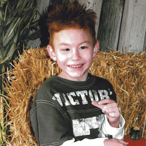
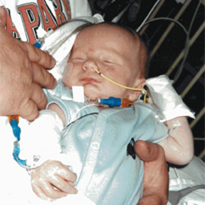

I would like to introduce you to a little redheaded boy named Carson. His youthful spirit is a joy to behold, his smile radiant, and his laughter a song in the making. His love shines through all of the hardships he has endured in his life...
Celebrating the Difference You're Making! Many of you were a blessing to Carson and his family.
There are no events at this time, if you would like to host an event, please contact us.
Give instantly online via paypal or at any Wells Fargo bank, all donations are tax deductable.
I would like to introduce you to a little redheaded boy named Carson. His youthful spirit is a joy to behold, his smile radiant, and his laughter a song in the making. His love shines through all of the hardships he has endured in his 10 years of life.
Carson was born on Saint Patrick’s Day, March 17, 2001. He was diagnosed with Dandy-Walker Syndrome (DWS), a rare congenital brain malformation that occurs in one of every 25,000 live births. Life longevity is truly unknown because it is so rare.
In layman’s terms, DWS is a malformation that occurs during embryonic development of the cerebellum and the fourth ventricle of the brain. The cerebellum is the area of the brain that helps coordinate movement and is also involved with cognition and behavior. The fourth ventricle is a space around the cerebellum that channels fluid from inside to around the outside of the brain. DWS is characterized by underdevelopment (small size and abnormal position) of the middle part of the cerebellum, cystic enlargement of the fourth ventricle and enlargement at the base of the skull. Convulsions, lack of muscle coordination, nerve control for the eyes, face, neck, limbs, toes and fingers, and abnormal breathing patterns are all a part of DWS.

"At 13 days-old Carson had his first shunt surgery, which became infected."
Numerous disorders co-exist with DWS. In Carson’s case, he also has hydrocephalus which causes enlarging of the skull due to cerebrospinal fluid collecting near the internal base of the skull and spaces surrounding the brain. Increased cranial pressure requires surgically implanted shunts to help relieve the pressure. He also has severe Cerebral Palsy, Schizencephaly (as he ages he will experience more frequent and harder to control seizures), and Gray Matter Heterotopia (neurological and vision impairment).
At 13 days-old Carson had his first shunt surgery, which became infected. At four weeks old he was rushed into surgery for a shunt replacement. Complications after his second surgery caused his brain to collapse and hemorrhage. Due to the brain trauma, he experienced two strokes. Fighting against all odds of survival, his will to live won the battle. His doctors, the hospital staff, family and friends often called him the “Million Dollar Baby” and “Miracle Baby.” However, he was not left unscathed by this trauma. As he struggled to hang on to life, he began having severe seizures.
This fragile little boy has been hospitalized for infections, shunt replacements, and corrective surgeries so many times that his parents have lost count of the total number. (Last count was three years ago at over 72 hospitalizations).
"This fragile little boy has been hospitalized ... so many times that his parents have lost count."
His father has worked two jobs since Carson’s birth to provide for most of his needs. His mother became the primary care-giver. She feeds, bathes, diapers, dresses him and carries him almost everywhere. Their abiding love, belief in God, and the support of relatives and friends have eased their struggles thus far. However, as Carson continues to grow, so do his needs to sustain his quality of life and mere existence. His family is faced with huge medical expenses which far exceed their income level. The void has become too large to handle on their own.
Carson and his family needs the family bathroom remodeled to accommodate his special needs and in-home lift system for bathing assistance and to move him in and out of bed.
Numerous fund raising activities are being planned to help ease the financial burdens of this young family. You can help in several ways; with your prayers, by volunteering to help at fund raising events, and by donating to his fund.This website has been established that will list upcoming fundraising activities, how and where donations can be made, and volunteer assistance information. Please join us on this journey of hope. Follow our updates on Carson and the inspirational progress we make in obtaining the necessary funding this family needs.
Your compassion can make a difference for Carson and his family!
To make a donation to Love on Carson, stop in at any Wells Fargo Bank. Mention that you want to donate to the loveoncarson charitable savings fund.